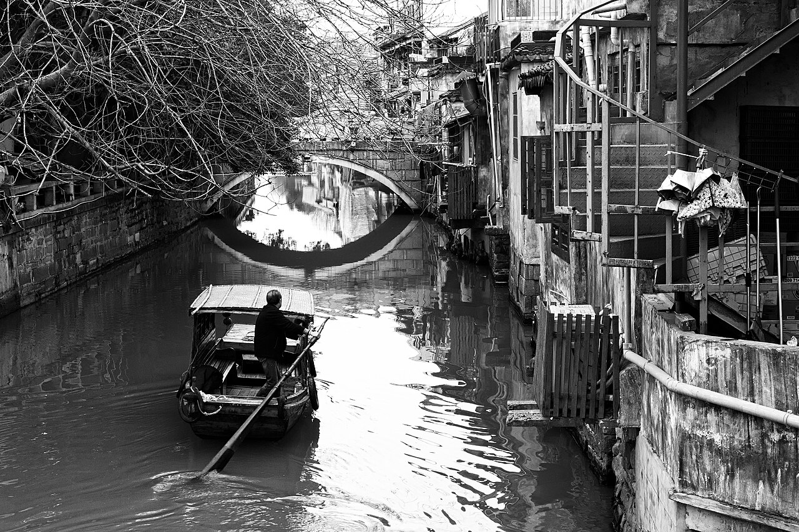

NOVEMBER 13 — 24, 2026
China.
Take the scenic way.
Harbor nights. River roads. Mountains in the mist.
A journey from Hong Kong to Shanghai.
From harbor lights
to mountain heights.
Hong Kong → Yangshuo → Zhangjiajie → Shanghai.
Two days in the countryside, three mountain days, and a Suzhou escape without changing hotels.

Hello, Hong Kong
Central → Sheung Wan → Victoria Harbour
Overnight · Hong KongHong Kong, your way
Choose a city day or a hike + beach day
Overnight · Hong Kong
From skyline to karst
Hong Kong → Guilin West → Yangshuo
Overnight · YangshuoAlong the Yulong River
Village roads, karst peaks & time on the water
Overnight · YangshuoNorth to the mountains
Yangshuo → Guilin → Zhangjiajie West → Wulingyuan
Overnight · WulingyuanAbove the sandstone pillars
Yuanjiajie + Tianzi Mountain
Overnight · WulingyuanDown in the forest
Golden Whip Stream + Huangshizhai → Zhangjiajie city
Overnight · Zhangjiajie cityA mountain, then Shanghai
Tianmen Mountain → evening flight
Overnight · Shanghai · arrival after midnight
A softer Shanghai morning
Fuxing Park → Wukang & Anfu → the Bund
Overnight · ShanghaiOld gardens, new skyline
Yu Garden → food stops → Pudong
Overnight · Shanghai
A day among Suzhou’s canals
Shanghai ⇄ Suzhou · no hotel change
Overnight · ShanghaiOne last morning
Breakfast, a short walk & departure
Overnight · —Your schedule is preserved. Daytime labels are flexible planning windows; exact trains, the Nov 20 nonstop flight, hotels, and entry slots remain to be confirmed.
Hello, Hong Kong
Central → Sheung Wan → Victoria Harbour
Land, settle in, and let the city come to you. Keep the first afternoon loose; the waterfront is the only evening anchor.
- Arrival
Arrive & settle in
Transfer to your Hong Kong hotel, drop your bags, and take a breather. Arrival airport, flight time, and hotel are still to be added.
- As time allows
Central to Sheung Wan
Wander the lanes between Central and Sheung Wan, with a coffee or a casual meal whenever you feel like stopping.
- Afternoon
Sheung Wan lanes
Keep walking if you have daylight and energy; there is no timed reservation to chase.
- After dark
Harbor lights & the Star Ferry
Walk the Central waterfront. If time allows, cross to Tsim Sha Tsui on the Star Ferry and take in the skyline.
- Optional finish
Kowloon waterfront
A relaxed waterfront stroll on the far side of the harbor before returning to your hotel. Skip this if you arrive late.
Everything today depends on your arrival time. If you land late, go straight to your hotel and save the neighborhood walk for tomorrow.
☾ Overnight · Hong Kong
Hong Kong, your way
Choose a city day or a hike + beach day
Choose one route for the day. The schedule and map switch together; these are alternatives, not a checklist to squeeze into one day.
Showing the city route
- City · morning
- City · afternoon
Kowloon & a food crawl
Explore Mong Kok and Kowloon’s busy streets. Graze as you go, with flexible food stops rather than reservations.
- City · evening
- Hike · morning
Dragon’s Back
Travel to the trailhead and enjoy the ridge walk. Choose your exact trail variant and transport after checking the weather. The pin marks the ridge area, not a trailhead or GPS track.
- Hike · afternoon
Shek O beach & village
After the hike, transfer to Shek O for a relaxed beach and village afternoon before returning to the city.
City is the starting selection. Choose the hike for a dry, clear day; keep Shek O as a separate onward transfer after the trail.
☾ Overnight · Hong Kong
From skyline to karst
Hong Kong → Guilin West → Yangshuo
A travel day with a soft landing in the countryside. Aim for an early train, then go directly to Yangshuo instead of spending the night in Guilin.
↗ Rail to Guilin West + car to Yangshuo · services to confirm
- Morning target
Train from Hong Kong West Kowloon
Book the service to Guilin West once sales open. Confirm the departure time and allow the station’s required check-in and border-processing buffer.
- On arrival
Guilin West → Yangshuo
Meet your prearranged driver at Guilin West and transfer directly to your Yangshuo accommodation.
- Late afternoon
A gentle countryside introduction
After check-in, take a short walk or easy bike ride near your accommodation. This pin is Yangshuo town; choose the actual route with your hotel.
Morning is your departure target, not a confirmed train time. If the available service arrives later, shorten or skip the countryside outing.
☾ Overnight · Yangshuo
Along the Yulong River
Village roads, karst peaks & time on the water
Spend the day outside: an easy cycling loop through villages, a pause by the river, and a bamboo raft outing if conditions allow.
- Morning
Cycle the Yulong River countryside
Rent bikes and explore quiet village roads. Choose a loop that suits your hotel location and riding comfort.
- Late morning
Yulong Bridge & village roads
Use the old bridge area as a scenic waypoint; stop for photos and a leisurely lunch along the way.
- Afternoon
Jiuxian village & bamboo rafting
Spend time around Jiuxian, then take a bamboo raft ride on an available Yulong River section. The pin marks the village, not a booked raft pier.
- Evening
The map is an area guide, not a cycling track. Finalize bike pickup, the raft pier and route, and the return transfer locally before setting off.
☾ Overnight · Yangshuo
North to the mountains
Yangshuo → Guilin → Zhangjiajie West → Wulingyuan
Treat this as a full transfer day. Arrange both cars ahead of time and give your Wulingyuan hotel your expected arrival time.
↗ Car + afternoon rail + car · late hotel check-in
- Morning
Transfer from Yangshuo to Guilin
Check out and take a prearranged car to the departure station shown on your train ticket. Leave room for traffic and the station buffer.
- Afternoon target
Train to Zhangjiajie West
Your planned afternoon rail leg is not yet booked. Confirm whether a direct train or a connection fits this date; keep the evening free for travel.
- Late arrival
Meet your driver at Zhangjiajie West
Have the driver track your actual arrival and agree a meeting point before traveling.
- Late check-in
Settle into Wulingyuan
Continue to your Wulingyuan hotel and check in late. Have the hotel arrange an easy dinner option if needed. The map shows the town center, not a hotel.
Confirm the exact Guilin departure station, train or connection, and arrival time before booking the pickup. Do not assume the onward train departs Guilin West.
☾ Overnight · Wulingyuan
Above the sandstone pillars
Yuanjiajie + Tianzi Mountain
Your first full forest park day is for the high viewpoints: the Avatar-like pillars of Yuanjiajie and the broad mountain views from Tianzi.
- Early start
Enter from the Wulingyuan side
Head to the forest park early with your entry and internal transport plan ready. The pin marks the Wulingyuan base area.
- Morning
Yuanjiajie: the Avatar mountains
Explore the pillar viewpoints and walking paths, allowing time to pause rather than racing between platforms.
- Afternoon
Tianzi Mountain
Continue to Tianzi Mountain for a different perspective on the forest of stone peaks.
- Evening
Return to Wulingyuan
Stay at the same hotel tonight. Have a quiet dinner and prepare for another park day.
Plan the park entry, shuttle, lift and cableway sequence with your hotel the night before. Route order can change with queues, weather and operating arrangements.
☾ Overnight · Wulingyuan
Down in the forest
Golden Whip Stream + Huangshizhai → Zhangjiajie city
Change the perspective: a stream-level walk, then Huangshizhai’s elevated views. Collect your bags and move to the city after the park.
↗ Car to Zhangjiajie city after the forest park
- Morning
Golden Whip Stream
Follow a manageable section of the stream-side path. The marker indicates the stream area; choose the exact start and finish locally.
- Afternoon
Huangshizhai
Head to Huangshizhai for another panorama, choosing walking or cableway arrangements to match your energy and conditions.
- After the park
Transfer to Zhangjiajie city
Collect your luggage and meet your driver for the move to a city hotel, ready for Tianmen Mountain tomorrow. Hotel location is still to be added.
Agree luggage storage, park exit, and pickup location before leaving Wulingyuan. Keep the walking distance flexible so the hotel transfer does not become rushed.
☾ Overnight · Zhangjiajie city
A mountain, then Shanghai
Tianmen Mountain → evening flight
Start Tianmen early, leave space to collect luggage and have dinner, and end the day on your planned nonstop flight to Shanghai.
↗ Planned nonstop flight · schedule and Shanghai airport unconfirmed
- Early start
Tianmen Mountain
Take your booked entry route and explore the mountain. Keep the visit within a clear time budget for the flight; the pin is the mountain area, not the cableway boarding point.
- Late afternoon
Collect bags & have dinner
Return to the city, collect stored luggage, and leave enough time to reach the airport for the airline’s check-in deadline.
- Night
Fly nonstop to Shanghai, if confirmed
Flight number, departure time, and Shanghai airport are still open. Use the booked flight to set the airport transfer and hotel arrival plan.
- After midnight
Check in to your Shanghai hotel
Reserve the hotel night of Nov 20 even if you reach the room on Nov 21, and confirm that late check-in is held.
The nonstop evening flight is a planning assumption, not a confirmed service. Verify Nov 20 availability and airport before committing to this sequence; tell the Shanghai hotel you may arrive after midnight.
☾ Overnight · Shanghai · arrival after midnight
A softer Shanghai morning
Fuxing Park → Wukang & Anfu → the Bund
Sleep in after the late arrival. Today is for leafy streets, café breaks, and the city’s riverfront after dark.
- Late morning
- Afternoon
- Afternoon
- After dark
Keep the first part of the day flexible. Take a taxi or metro between the neighborhood walk and the Bund; the dashed line is visit order, not a walking route.
☾ Overnight · Shanghai
Old gardens, new skyline
Yu Garden → food stops → Pudong
Start with garden paths and old-city lanes, then cross to Pudong for a riverside walk. An observation deck is an optional upgrade to the afternoon.
- Morning
- Lunch
Food stops around the old city
Leave the lunch stop open and browse the neighborhood at your own pace.
- Afternoon
- Optional
An observation deck
Shanghai Tower is a possible deck choice, subject to tickets and visibility. Skip it if you prefer to stay outdoors.
Choose the riverfront walk or add a deck visit if the weather and visibility make it worthwhile. Deck tickets, admission slots and restaurant choices remain open.
☾ Overnight · Shanghai
A day among Suzhou’s canals
Shanghai ⇄ Suzhou · no hotel change
A classical garden, old lanes, and canals — then back to the same Shanghai room. Travel light and keep the evening return train in mind.
↗ Return rail day trip · exact stations and services to confirm
- Morning
Train to Suzhou
Take a morning train and head to the old city. Station pins are omitted until your tickets determine the departure and arrival stations.
- Late morning
Humble Administrator’s Garden
Make this your one main garden, with enough time to enjoy its ponds, pavilions and changing views.
- Afternoon
Pingjiang Road & the canals
Walk the historic lanes, follow the water, and stop for tea or a relaxed meal.
- Evening
Return to Shanghai
Take your booked return train and head back to the same hotel. No overnight bag needed.
Humble Administrator’s Garden is the suggested garden: it pairs geographically with Pingjiang Road. Choose the exact Shanghai/Suzhou stations and train times before reserving transfers.
☾ Overnight · Shanghai
One last morning
Breakfast, a short walk & departure
If your flight leaves enough room, enjoy a final neighborhood breakfast. Otherwise, make the morning an easy airport transfer.
- If time allows
Breakfast & a neighborhood walk
Keep it close to your hotel and set a firm turnaround time based on the booked flight.
- Flight dependent
Depart Shanghai
Check out, collect bags, and leave for the correct airport with the airline’s required buffer.
No departure route is plotted: your hotel, flight time, and Shanghai airport have not been specified.
☾ Overnight · —
Make the connections.
Planning notes · checked October 20, 2026
No tickets or hotels have been booked through this page.
Nov 15 · Hong Kong → Guilin West
MTR lists Guilinxi as a direct destination. Exact November services are not yet on sale. Confirm the earliest workable train before fixing the Yangshuo transfer.
MTR destinations ↗Nov 17 · Guilin → Zhangjiajie West
Confirm the afternoon service or connection and the Guilin departure station. Arrange the late Wulingyuan car and check-in around the actual arrival.
China Railway 12306 ↗Nov 20 · Tianmen → Shanghai
Check the nonstop evening flight first. Leave a clear airport buffer and hold the Shanghai hotel for a Nov 20 booking with arrival after midnight. Flight and airport are unconfirmed.
Nov 23 · Suzhou, there and back
Book a return train pair and confirm the stations. Keep the same Shanghai hotel; pair Humble Administrator’s Garden with Pingjiang Road.
Suzhou’s Pingjiang Road guide ↗
Keep it simple.
Rail booking windowMTR sells tickets up to 15 days ahead; release times vary by departure station. Set reminders and check the exact sale date for each journey.
MTR ticket information ↗One time zoneHong Kong and every mainland stop use UTC+8. All time-of-day labels here are local.
Park days stay flexibleConfirm entry slots and internal transport for the forest park and Tianmen. Let visibility, queues, and energy set the walking distance.
Hotel basesHong Kong · 2 nights
Yangshuo · 2 nights
Wulingyuan · 2 nights
Zhangjiajie city · 1 night
Shanghai · 4 nights
Your map, at two scalesWhole trip shows the big connections. Select a day for numbered local stops. Pins mark approximate landmarks or areas; hotel and airport routes await booking details.
Photography & map credits
Hong Kong Harbour Night 2019-06-11.jpg — Benh LIEU SONG (Flickr) · CC BY-SA 4.0
1 aerial yangshuo panorama 2017.jpg — Chensiyuan · CC BY-SA 4.0
Pudong Shanghai November 2017 panorama.jpg — King of Hearts · CC BY-SA 4.0
Canal dans le centre ancien de Suzhou (16999191119).jpg — Nicolas Vollmer from Paris [France] · CC BY 2.0
1 zhangjiajie huangshizhai wulingyuan panorama 2012.jpg — chensiyuan · CC BY-SA 4.0
Photos shown with CSS cropping. Map data © OpenStreetMap contributors. Approximate landmark positions; dashed lines are schematic connections, not navigation tracks.